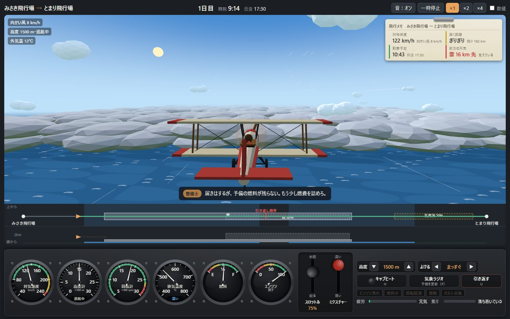
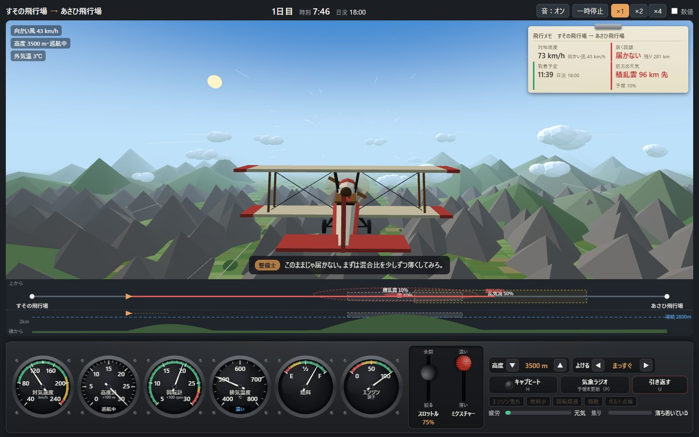
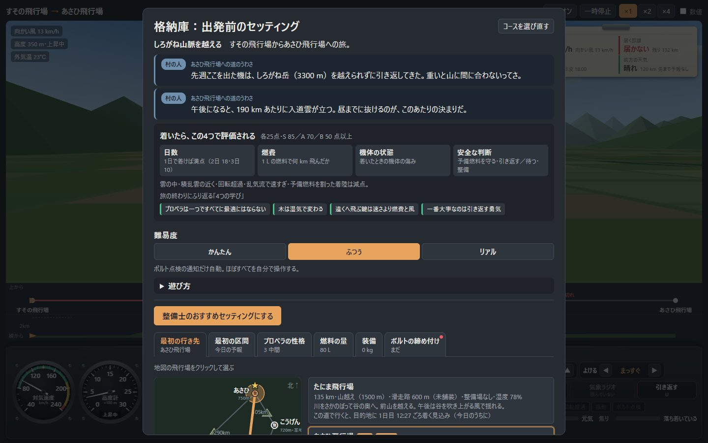
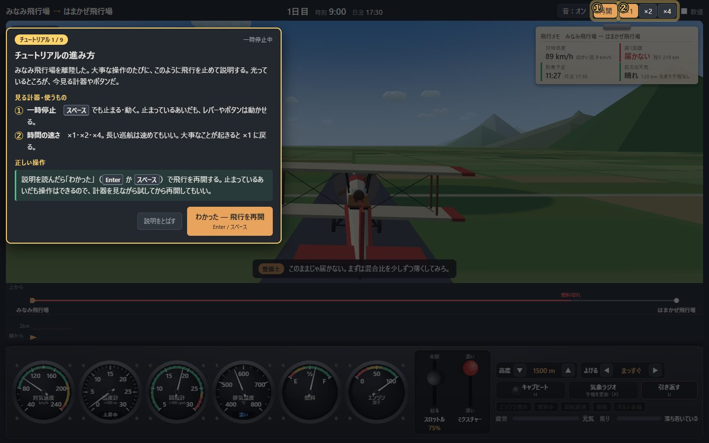
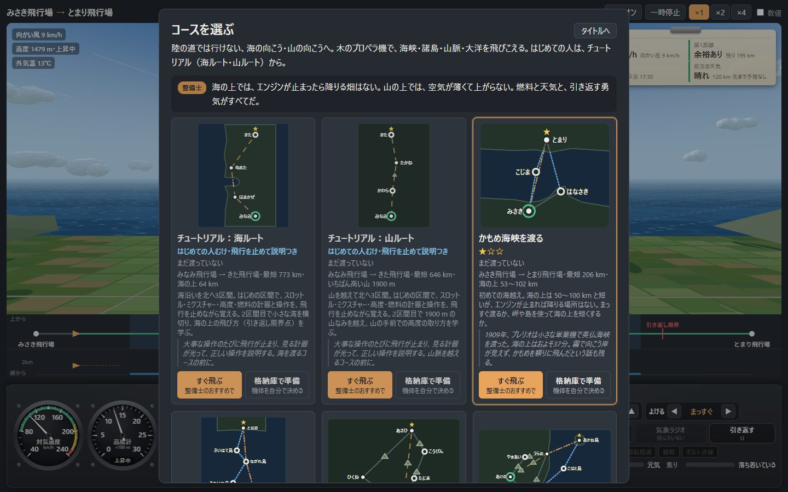

格納庫で、整える
プロペラの性格（上昇型か巡航型か）、積む燃料の量、気象ラジオや予備のプロペラ。そして、ボルトの締め付けは自分の手で。何を選ぶかで、越えられる山と渡れる海が変わります。
海の向こう・山の向こうへ
空の旅を、操縦の腕ではなく「判断」で楽しみたい人へ
その燃料で、向こう岸まで届くか。
海の上で止まれば、降りる畑はない。山の上では、空気が薄くて上がらない。
木のプロペラ機に積めるのは、80リットルの燃料と、引き返す勇気だけ。
海峡・諸島・山脈・大洋を飛びこえる、長距離飛行のブラウザゲームです。むずかしい操縦はいりません。機体を整え、天気を読み、計器を見て、行くか戻るかを決める――史実の冒険飛行家たちと同じ悩みを、チュートリアルから一歩ずつ味わえます。
着想 遊びたかったのは、操縦の腕ではなく「判断」で飛ぶ旅。最初の試作には所持金と、航空祭に間に合わせる締め切りもありました。どちらも外して、残したのは天気と燃料と、引き返す勇気です。
ABOUT
舞台は、陸の道では行けない海の向こう・山の向こう。1909年の英仏海峡横断、1919年の大西洋横断、アルプスやアンデスの山越え―― 史実の挑戦をもとにした架空のコースを、木のプロペラをつけた複葉機で飛びこえます。 機体を整え、空を読み、計器を見て、ときには引き返す。その積み重ねで、遠い目的地へたどり着きます。
プロペラの性格（上昇型か巡航型か）、積む燃料の量、気象ラジオや予備のプロペラ。そして、ボルトの締め付けは自分の手で。何を選ぶかで、越えられる山と渡れる海が変わります。
スロットルとミクスチャー、高度とキャブレターヒート。対地速度・回転計・排気温度・燃料計を読みながら、「届く距離」を少しでも伸ばしていきます。
前方に積乱雲。燃料は予備ぎりぎり。海の上では、止まったら降りる畑はない。「引き返し限界点」を越える前に決めること。勇気ある撤退は、評価でもちゃんと報われます。
FEATURES

01
海の上ではエンジンが止まれば着水。予備のプロペラがあっても交換はできません。画面下の帯には、今の速さと燃料で出発地へ戻れるいちばん遠い地点――引き返し限界点が赤い線で出ます。

02
高く上がるほど上昇は鈍り、3000 m では半分に。重いまま谷を出れば、峠に間に合わないことも。高い空は向かい風、凍結高度より上では翼やプロペラに氷がつきます。山の上の飛行場では、離陸に必要な距離も伸びます。
海と山の手直し 最初は陸の上の地図だけでした。海は陸地の形から区間ごとに見分け、止まれば着水、予備のプロペラでの復帰もなしに。山には「高いほど上がらない」を足して、1000 m までは変わらず、3000 m で半分、5000 m で 0。横から見た2Dの画面もありましたが、3Dの景色ひとつにしぼりました。

03
行き先は地図で選び、区間ごとの断面図と予報を見て、プロペラ・燃料・装備を決めます。経由地では機体を点検し、整備・給油・宿泊。迷ったら「整備士のおすすめセッティング」が理由つきで教えてくれます。

04
海ルート・山ルートの2つのチュートリアルでは、大事な操作のたびに飛行を一時停止。見る計器を光らせ、意味と正しい操作を説明します。「やってみよう」ができたら「できた！」。
格納庫とチュートリアルの手直し 格納庫の数字は、羽根の角度の三角形・燃料タンク・ボルトの断面などの図で見せるように。見出しごとのタブに分け、飛行の時間も1.5倍ゆっくりにしました。最初の「陸の旅（練習）」は、飛行を止めて計器を光らせる海ルート・山ルートのチュートリアルに作り直し。整備士に「ゲンさん」と名前がついたのは、ずっとあとのことです。
WEATHER & PILOT
天気は予報どおりとはかぎりません。気象ラジオを積めば、飛びながら予報を取り直せます。そして疲れや焦りは、操縦者の判断をにぶらせます。
COURSES
地名と地形は架空。どれも陸の道では行けない、海の向こう・山の向こうへの旅です。
チュートリアル
海沿いを北へ3区間。2区間目で湾の上（約 65 km）を横切り、海の上の飛び方を覚える。
チュートリアル
山を越えて北へ3区間。2区間目で 1900 m の山なみを越え、山の手前での高度の取り方を学ぶ。
★☆☆
海の上は 50〜100 km。まっすぐ渡るか、岬や島で海を短くするか。朝の海霧と横風。
1909年 ブレリオの英仏海峡横断
★★☆
海の上 130〜330 km を何度も。島の滑走路は短く、整備場のない島もある。
1919年 NC-4 の大西洋横断
★★☆
3300 m の峰のすぐ横を越える直行か、峠の谷から急上昇か、遠回りの南回りか。
1910年 チャベス／1918年 ゴドイ
★★☆
山を越えてから、海の上 135 km の島へ。峠を行くか、島づたいに回るか。
1930年 エイミー・ジョンソンの英豪飛行
★★★
海の上 508 km の直行は、満タン・最良燃費でも残りは十数 L。北回りは霧と凍結のあいだ。
1919年 アルコックとブラウン／1927年 リンドバーグ
★★★
長い海のあとに 3400 m の峠。プロペラは旅のあいだ替えられない。どちらに合わせる？
1930年 メルモーズ／ギヨメ

コースの手直し 海の3コースと山脈越えは同じ日に、海と山の複合コースは次の日に足しました。悩んだのは「はるか海を渡り 山脈を越える」。プロペラは旅のあいだ替えられないので、上昇型なら峠は越えられても海で燃料が心細く、巡航型なら海は楽でも峠を越えられない。どちらかを選ぶしかないように、峠の高さと海の長さを合わせています。
SCORE
各25点・100点満点 S 85点以上 A 70点以上 B 50点以上
コースごとの自己ベストと、題名が「？？？」で伏せられた10個の実績。「大洋を越えた」で増設タンクが使えるように。
記録と実績の話 自己ベスト・伏せた10個の実績・土地の人のうわさ話は、セールスレターの組み立てをゲームに当てはめてみる試みから生まれました。最後の画面の「次の旅」で、次のランクまでの点数と伸ばし方が出るのもそのひとつ。実績の題名は、手に入れるまで「？？？」のままです。
HOW TO PLAY
すぐに飛びたい人は、コースの「すぐ飛ぶ」で整備士のおすすめセッティングのまま離陸できます。
| W S（↑ ↓） | スロットル |
|---|---|
| A D（← →） | ミクスチャー（D で薄く） |
| R F | 目標高度 ±100 m |
| Q E | 左右によける |
| H | キャブレターヒート |
| P | 気象ラジオで予報を更新 |
| U | 引き返す |
| スペース | 一時停止 |
軽さと遊びやすさの手直し 部品を1つずつ止めて測ってみたら、飛行中の重さの半分近くは計器の2D描画でした。針が目に見えて動いたときだけ描き直すようにして、手元のパソコンで飛行中の fps は約80 → 140〜180。景色の描画命令も約120回 → 約25回にまとめ、遅いパソコンでは解像度を自動で下げます。英語版も、ゲームの中で切り替えられます。